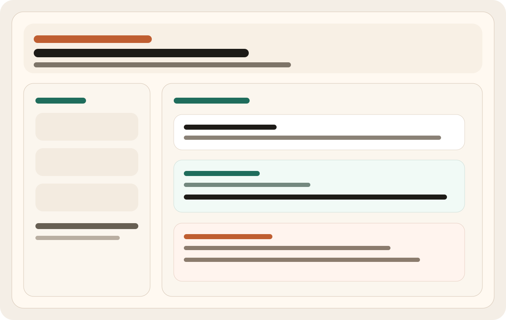
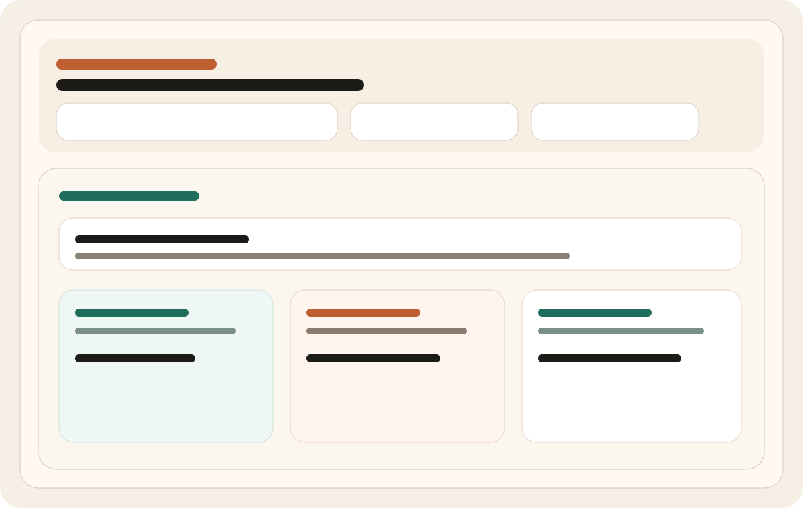
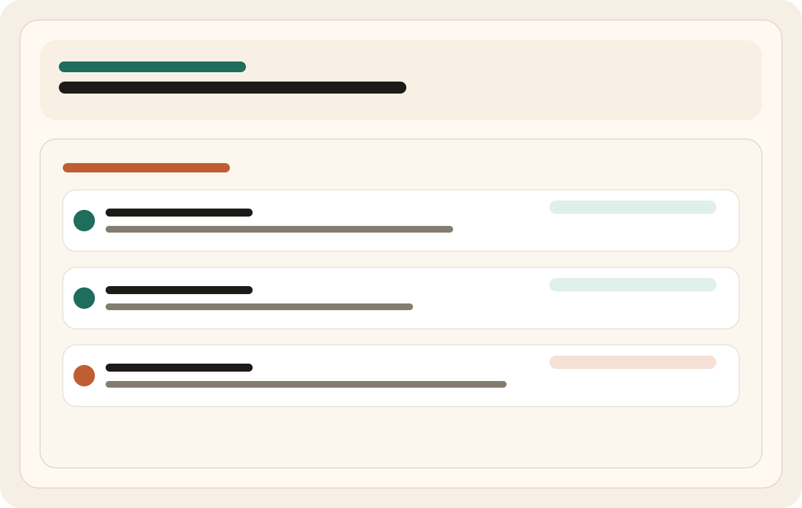

Local First
- Runs against local Ollama models
- Stores memory and workflow history in SQLite
- Supports safe local tooling and template generation
Release v1.0.0
A local, Arabic-friendly Ollama agent that can chat, scaffold projects, execute build pipelines, and track workflow progress from one interface.


